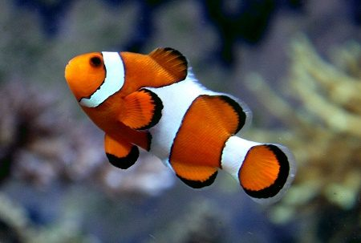

Penyu adalah hewan yang banyak ditemukan bertelur di beberapa pesisir pantai di Indonesia sejak dahulu.

Ikan badut ini dapat dikenali dengan warna jingganya. Ikan ini tumbuh mencapai 8cm serta termasuk dalam ikan terpopuler di dunia.

Lionfish atau volitans adalah ikan berbisa milik keluarga Scorpaenidae. Terjemahan harfiah berarti ikan kalajengking.

Ikan Moorish Idol adalah salah satu ikan yang cukup populer di kalangan para hobiis ikan hias karena bentuknya yang unik dan pola warnanya yang menarik.